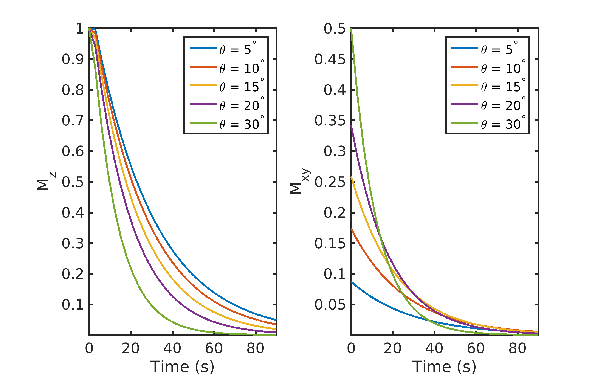
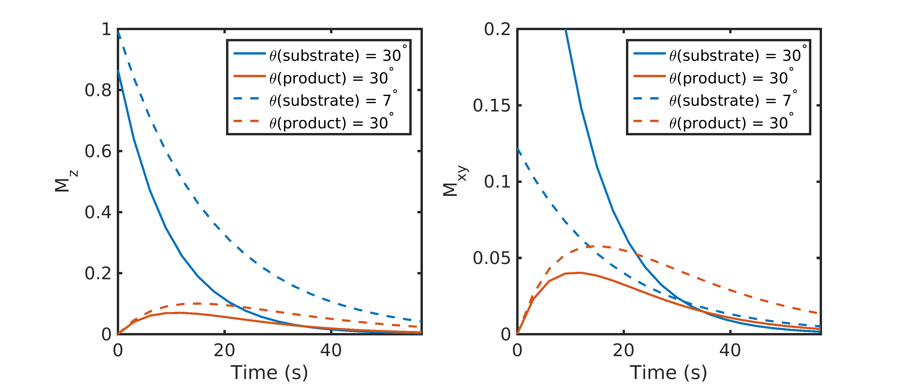
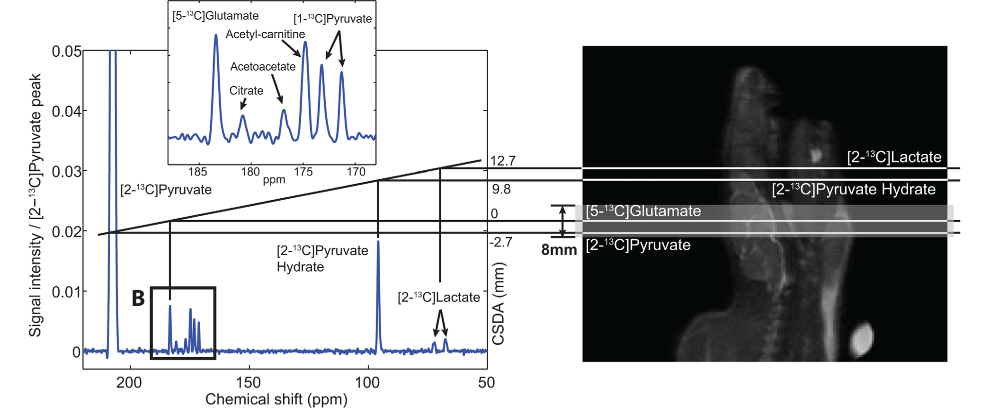
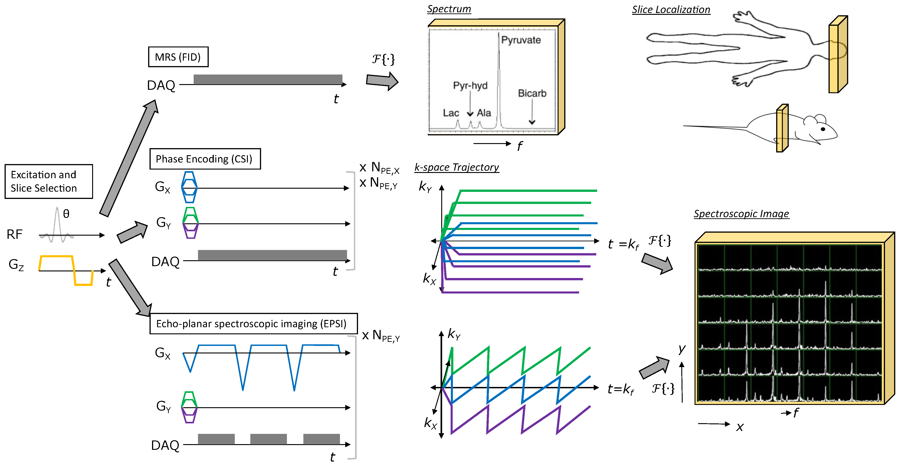
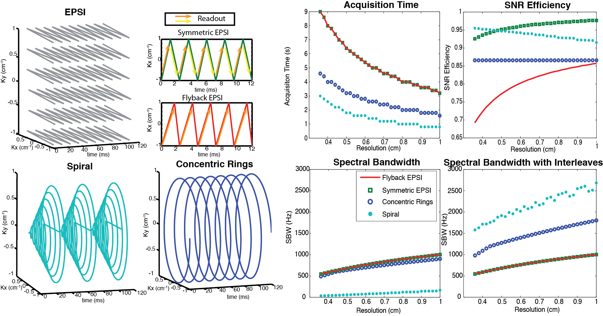
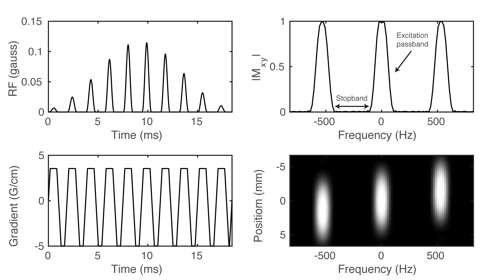
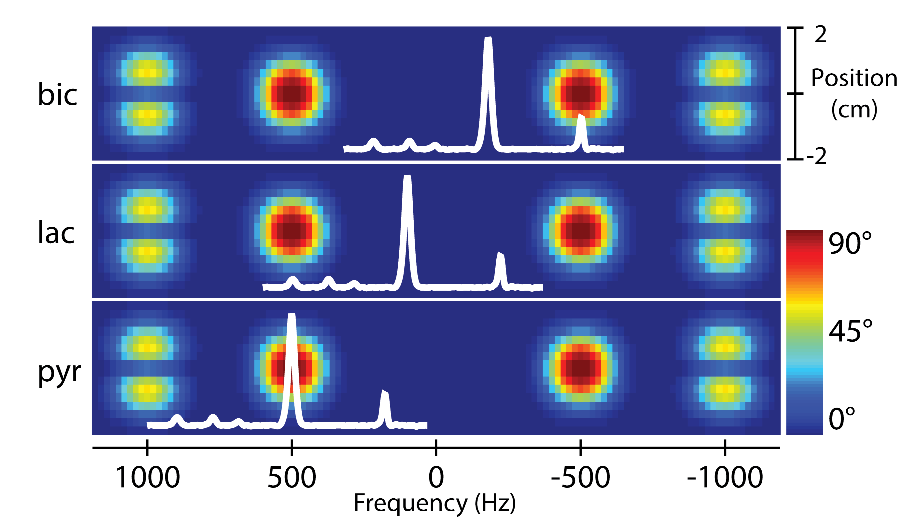
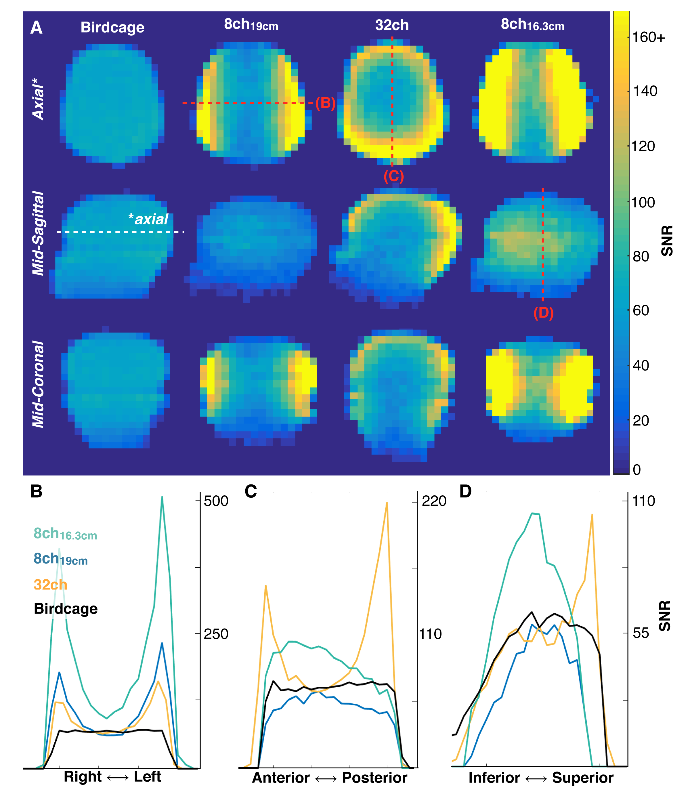
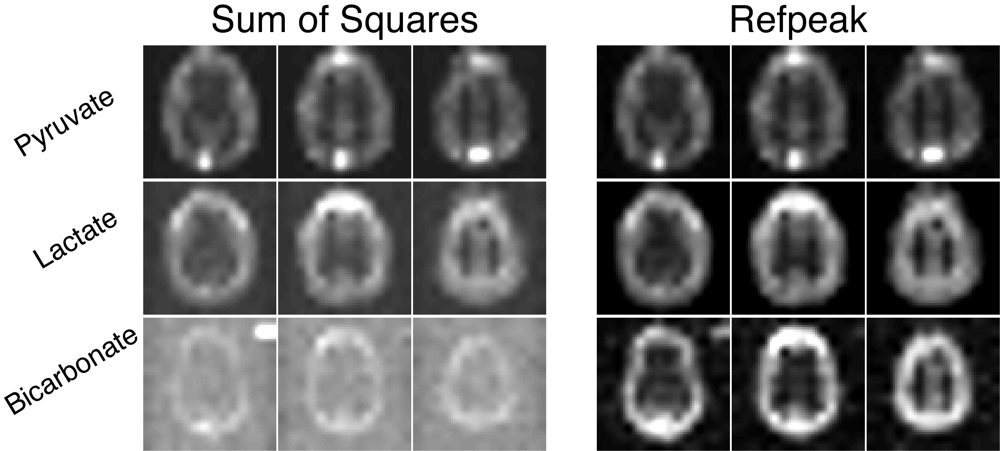

HP Acquisition Methods: Pulse Sequences, Reconstruction, and RF Coils#
Jeremy Gordon, PhD1 & Jack J. Miller, DPhil2
1Department of Radiology & Biomedical Imaging, University of California – San Francisco, San Francisco, CA, USA
2Department of Physics, University of Oxford, Oxford, United Kingdom.
Abstract: In the seventeen years since the introduction of dissolution DNP, significant advancements have been made in the development and acquisition of hyperpolarized data, with the field moving from pre-clinical studies using non-selective spectroscopy to clinical studies with whole organ coverage using rapid imaging sequences. The use of 13C labeled agents, primarily [1-13C]pyruvate, enables monitoring of key metabolic pathways with the ability to image both substrate and products to non-invasively measure real-time metabolism, but the non-renewable magnetization requires specialized hardware and pulse sequences to efficiently encode this magnetization. This chapter will describe some of the unique challenges associated with HP imaging, the main classes of pulse sequences for HP imaging, and review the general tradeoffs between RF coils.
Key Words: Hyperpolarization, DNP, CSI, EPSI, spectroscopic imaging, metabolite-selective imaging, RF coils.
Introduction#
In the seventeen years since the introduction of dissolution dynamic nuclear polarization (DNP) (1), significant advancements have been made in the development and acquisition of hyperpolarized 13C data. The use of metabolically active 13C labeled agents, primarily [1-13C]pyruvate, enables non-invasive monitoring of key metabolic pathways, but the non-renewable magnetization requires specialized hardware and pulse sequences to efficiently encode this magnetization. Since the early work of Golman et al (2), significant advancements have been made in RF design, pulse sequence strategies, and coil hardware that have helped the field move from rodent studies using single-slice CSI to human studies using metabolite-selective pulse sequences that provide whole organ coverage over large FOVs. This chapter will describe some of the unique challenges associated with HP imaging, discuss the main classes of pulse sequences for HP imaging, and review the general tradeoffs between RF coils. Although dissolution DNP has been the primary polarization mechanism for human applications, this chapter is equally applicable to substrates polarized via PHIP, SABRE, or other processes (3,4).
Hyperpolarized Imaging Considerations#
The dissolution DNP process, discussed in more detail in the Physics of Dissolution DNP and Hardware for Dissolution DNP chapters, provides more than four orders of magnitude increase to nuclear polarization. This transient increase overcomes the small thermal equilibrium magnetization—on the order of parts-per-million at clinical field strengths and physiologic temperature - and enables dynamic imaging of hyperpolarized substrates that can be used to rapidly and efficiently encode 5D data (3 spatial + 1 spectral + 1 temporal dimensions). However, this has significant consequences for the design of hyperpolarized studies, particularly in regard to the total imaging time and choice of flip angles. These details and tradeoffs will be discussed in the next few sections.
T1 Decay & Non-Recoverable Magnetization#
Unlike conventional MRI, the longitudinal magnetization in a hyperpolarized experiment is non-recoverable and inexorably decays back to thermal (Boltzmann) equilibrium once the sample is removed from the polarizer. The longitudinal magnetization \(M_{Z}(t)\) can be written as:
\( M_{Z}(t) = M_{0} + \left( M_{Z,HP} - M_{0} \right)\exp \left( - \frac{t}{T_{1}} \right) \cong \ M_{Z,HP} \exp\left( - \frac{t}{T_{1}} \right) \) (1)
Here \(M_{Z,HP}\) is the initial hyperpolarized magnetization, M0 is the thermal equilibrium magnetization, and T1 is the longitudinal relaxation time. M0 is on the order of parts-per-million at clinical field strengths and physiologic temperatures and can in general be neglected given the much larger \(M_{Z,HP}\) (typically \(M_{Z,HP} \gg 10,000 \times M_{0}\)). T1 times are highly dependent on the local chemical environment and can vary from seconds for spins with directly attached hydrogen nuclei to 100+ seconds for quaternary carbons that are chemically isolated. The primary relaxation pathways are discussed in further detail in Physics of Dissolution DNP and HP Agents and Biochemical Interactions, but it is important to note that the T1 time provides an upper limit for hyperpolarized experiments and limits the total imaging time. After three T1 times, the longitudinal magnetization has lost more than 95% of the hyperpolarized magnetization and in general is near or below the detectability limit for hyperpolarized pulse sequences.
Sampling of the hyperpolarized magnetization is also affected by the injection profile. The `ideal’ injection profile of the hyperpolarized agent, i.e. delivered volume as a function of time, would be that which maximizes the total received signal. Owing to the fact that the paramagnetic nature of blood serves to reduce the T1 of the majority of reported probes in vivo compared to in their dissolution medium, there is an argument to be made for retaining a `reservoir’ of magnetization outside of the subject, and infusing the agent at a controlled rate to obtain kinetic curves that maximally allow for the determination of the rate constants of interest with the least noise. Maidens and Arcak (5) have considered this problem for the case of [1-13C]pyruvate infusion and shown, with no small degree of mathematical rigor, that a unique “ideal” infusion profile can be derived given a series of appropriate constraints. Perhaps fortunately, the existence of an ideal profile can be used to show that the typical ‘15 s boxcar’ infusion profile (whereby the total dose administered is done so at a constant rate over 15 s, which starts and stops abruptly) obtains at least 98.7% of the global optimum. It is therefore the case that the majority of reported studies do not use an injection scheme other than that of the boxcar.
RF Decay & Metabolism#
In 1H MRI, the flip angle is chosen to provide a desired contrast or to maximize signal (i.e. Ernst angle for a spoiled gradient echo). In hyperpolarized MRI the choice of flip angle has a much greater impact, as it determines not only the overall SNR but also the total imaging time of the acquisition. As discussed in the previous section, hyperpolarized spins decay to thermal equilibrium once they are removed from the polarizer. Implicit within this, however, is that each RF pulse consumes some of the finite, non-recoverable hyperpolarized magnetization. In the absence of metabolism, the expression for the longitudinal (\(M_{Z}\)) and transverse (\(M_{XY}\)) magnetization after n RF excitations of a constant flip-angle θ is given by (6):
\(M_{Z}(t) = M_{Z,\text{HP}}\ \text{exp}\left( - \frac{t}{T_{1}} \right)\text{cos}^{n}\theta\) (2)
\(M_{\text{XY}}(t) = \mathbf{M}_{\mathbf{Z},\mathbf{\text{HP}}}\ \text{exp}\left( - \frac{\mathbf{t}}{\mathbf{T}_{\mathbf{1}}} \right)\text{cos}^{n - 1}\theta\ \text{sin}\theta\) . (3)

Figure 1. The effect of flip-angle (θ) on the longitudinal (\(M_{Z}\)) and transverse (\(M_{XY}\)) magnetization. A large flip-angle rapidly consumes the polarization but provides the highest initial signal. A low flip-angle preserves the polarization and provides a smaller (but more consistent) signal throughout the acquisition. Data were simulated with a 3 s TR and a T1 of 30 s.
A simple example showing the combined effects of T1 and repeated RF excitation on \(M_{Z}\) and \(M_{XY}\) is illustrated in Fig. 1. In this pedagogical example, a single RF excitation occurs every 3 s on a compound with a T1 of 30 s. A small flip angle preserves \(M_{Z}\) and provides a small but constant \(M_{XY}\) throughout the acquisition. In contrast, a larger flip-angle initially leads to a larger \(M_{XY}\), but because there is no recovery, the rapid consumption of \(M_{Z}\) magnetization results in a rapid reduction in \(M_{XY}\) throughout the acquisition. This signal variation between excitations can act as a k-space filter, resulting in a low- or high-pass filter if k-space is acquired in a centric or sequential view order, respectively (6).
However, most hyperpolarized 13C studies employ a substrate (such as [1-13C]pyruvate) that is metabolically active. Metabolites are generated through enzymatic conversion or label exchange from the hyperpolarized substrate and further spread out the hyperpolarized magnetization amongst multiple compounds. Given the presence of metabolic conversion, the frequency response of RF pulses can be used to modulate the flip angles for different compounds, improving the SNR in dynamic hyperpolarized experiments. A number of flip angle schemes (6-10) have been proposed that vary the flip angle across frequency and/or time to more efficiently sample the magnetization throughout the acquisition*.* One common way to approach this would be to apply a lower flip angle to the injected substrate, which is typically present at a higher concentration and has higher SNR than downstream metabolites that would be given a larger flip angle to boost their SNR. In this example, the signal time course for the injected substrate and metabolic product excited with a constant 30° flip angle or a variable flip angle scheme of 7° substrate / 30° product can be seen in Fig. 2. Utilizing the same flip angle for both substrate and product results in excess substrate SNR and an overall reduction in product SNR because of the rapid drop in the substrate \(M_{Z}\). Using a multiband (or metabolite-specific) flip angle – lower excitation for substrate and higher for metabolite – results in reduced usage of the substrate hyperpolarization \(M_{Z}\), providing more product magnetization while still providing sufficient SNR for both throughout the acquisition. The flip angle can also be varied through time, with schemes developed to either maximize metabolite signal or provide uniform signal throughout the acquisition (7,9,10), though it is important to note that these approaches tend to be more sensitive to errors in RF transmit power and variations in bolus delivery and perfusion (11,12). These flip angle strategies can be incorporated by designing a multiband RF pulse (13) for spectroscopic imaging sequences or through a singleband spectral-spatial RF pulse (14) in metabolite-selective imaging sequences. These will be discussed in further detail in the next section.

Figure 2. Constant vs multiband metabolite-specific flip angle strategies with a metabolically active substrate. Utilizing the same flip angle for both substrate and product results in excess substrate SNR and an overall reduction in product SNR because of the rapid drop in substrate \(M_{Z}\). Using a multiband flip angle scheme – lower excitation for substrate and higher for the metabolic product – results in reduced usage of the substrate hyperpolarization, providing 1.8-fold more magnetization for the product in this example while still providing sufficient substrate SNR throughout the acquisition. Data were simulated with a 3 s TR, a T1 of 30 s for both substrate and product, and a metabolic conversion rate constant of 0.02 \(s^{-1}\).
The key takeaway here is that RF pulses and metabolism will further utilize the non-recoverable magnetization, and the tradeoffs between SNR for a single timepoint and total SNR throughout the entire acquisition must be taken into account. This implies that signal averaging or experiments that require a 90° excitation are generally incompatible in hyperpolarized experiments. Refocused sequences that utilize high flip angles, such as fast spin echo (15) or SSFP (16,17) can be adapted for hyperpolarized studies but care must be taken to properly calibrate the RF power and/or employ the use of adiabatic RF pulses (18). Furthermore, refocusing trains that have the potential to deliver a large flip angle to hyperpolarized metabolites represent a challenge in the context of experiments where an injection necessarily comes from outside the sensitive region of the transmit coil used.
Chemical Shift Displacement#
Hyperpolarized metabolic imaging provides valuable and unique functional information because of the distinct resonance frequencies of the injected substrate and metabolic products. However, this frequency difference will cause chemical shift displacement along the slice-select dimension. Spatial shifts or blurring can also occur due to the point spread function of the imaging sequence, but this will be discussed further in the Pulse Sequences & Reconstruction section.
Chemical shift displacement results in a different slice location for each metabolite and is especially pronounced if there are large frequency differences between compounds. This can occur at high field or with studies of compounds that have a large chemical shift difference. The magnitude of the spatial slice displacement, δz, is determined by the spectral separation between compounds, δf, along with either the slice selection gradient strength, \(G_{Z}\), or the RF pulse bandwidth, \(BW_{RF}\), and slice thickness, Δz:
\(\delta z = \frac{\text{δf}}{\frac{\gamma}{2\pi} \times G_{z}} = \frac{\text{δf}}{\text{BW}_{\text{RF}}}\Delta z\) (4)

Figure 3. Example of chemical shift slice displacement. The large frequency difference between [2-13C]pyruvate and [2-13C]lactate (~4500 Hz at 3 T) results in substantial slice displacement in this study of the rat brain using a conventional 2.3kHz slice-selective excitation, leading to errors in quantification. Figure adapted from Ref. (19).
This is illustrated in Fig. 3, showing the slice displacement of [2-13C]pyruvate and metabolites in a rat brain study at 3 T (19). Due to the ~4500 Hz frequency difference between [2-13C]pyruvate and [2-13C]lactate, the lactate spins excited by the RF pulse (2.3 kHz RF bandwidth) come from a shifted slice completely outside of the brain, which will confound any estimate of metabolism. Chemical shift displacement can be partially mitigated by using a higher bandwidth RF pulse for slice-selection or completely obviated through the design of multiband RF pulses (13) or by selectively exciting each metabolite with a singleband spectral-spatial RF pulse, as will be further discussed in the metabolite-selective imaging section.
Pulse Sequences & Reconstruction#
Data acquisition strategies in HP MRI experiments must account for multiple chemical shifts, efficiently utilize the non-renewable HP magnetization, and acquire data quickly relative to metabolism and relaxation decay processes. Studies of inert HP molecules, such as 13C-urea (17,20) or 13C-t-butanol (21), have only a single resonance and can be imaged with any conventional pulse sequence combined with the HP RF pulse strategies described above. Studies of metabolically active HP molecules require spectral encoding to separate metabolites, requiring pulse sequences to efficiently encode 5D data (3 spatial + 1 spectral + 1 temporal dimension). This section will describe the major varieties of spectroscopic imaging and metabolite-selective imaging sequences that have been used for hyperpolarized 13C MRI and will discuss their relative tradeoffs and benefits.
Non-Selective Spectroscopy & CSI#
Magnetic resonance spectroscopic imaging (MRSI) provides spatial and spectral encoding to localize and resolve HP 13C-labeled metabolites. MRSI techniques have the advantage that they provide a continuous spectrum which can be analyzed to extract expected as well as unexpected resonances, making this approach very robust and the go-to method for exploratory HP studies when the number of resonances and their relative chemical shift are unknown.
The most straightforward method for hyperpolarized 13C studies is 1D spectroscopy, which acquires a non-localized spectrum from a single slice or a region limited by the sensitivity of the receive coil. This approach provides spectroscopic data with a high spectral bandwidth and spectral resolution, with the capability for sub-second temporal resolution to capture rapid enzyme kinetics. This approach is well-suited for hyperpolarized substrates with short T1 times, substrates with a complicated spectrum or broad chemical shift like [2-13C]pyruvate (22,23) or [U-2H, U-13C]glucose (24), or when spatial localization is not crucial, such as studies where global changes are expected.
An extension of 1D spectroscopy, phase-encoded chemical shift imaging (CSI) also provides a large spectral bandwidth and high spectral resolution along with spatial encoding. However, the main challenge in performing hyperpolarized MRSI is imaging speed, and CSI is quite slow because it is a pure phase-encoded sequence. CSI requires \(N_{X} \times N_{Y}\) RF excitations for a single slice, where \(N_{X}\) and \(N_{Y}\) are the number of voxels in the X- and Y- dimensions of the 2D spatial array. For example, even a relatively coarse 8 × 8 matrix requires 64 RF excitations, resulting in a long acquisition time (5-15 seconds with typical TRs) for only a single slice and single timeframe. Similar to 1D spectroscopy, phase-encoded CSI is most well-suited for pre-clinical studies with small FOVs (2,25) or for substrates with complicated spectra or large chemical shift dispersion where high spectral resolution and a large spectral bandwidth are needed, as its poor temporal resolution precludes volumetric coverage and can hamper measurements of metabolic conversion.

Figure 4: Illustration of MRSI methods for HP agents. All methods start with RF excitation and slice selection, appended with a spectroscopic or spectroscopic imaging readout. Free induction decay (FID) MRS provides a spectrum from the excited slice and just requires one TR. Phase encoding (CSI) provides a spectroscopic image, but requires multiple TRs to perform all phase encodings necessary to sample k-space (e.g., Scan time = \(TR \times N_{PE,X} \times N_{PE,Y}\) for the 2D MRSI example shown). Echo-planar spectroscopic imaging (EPSI) also provides a spectroscopic image, but requires relatively fewer TRs to cover k-space (e.g., Scan time = \(TR \times N_{PE,Y}\) for the 2D MRSI example shown), allowing for rapid imaging of HP agent kinetics. Figure adapted from Larson PEZ, Gordon JW. Hyperpolarized Metabolic MRI—Acquisition, Reconstruction, and Analysis Methods. Metabolites. 2021; 11(6):386. https://doi.org/10.3390/metabo11060386
Fast Spectroscopic Imaging#
Fast spectroscopic imaging techniques employing multi-echo readouts during acquisition can greatly reduce the scan time for HP experiments compared to phase-encoded CSI. Joint spatial and spectral encoding is accomplished by traversing k-space at multiple TEs, shifted in time by a fixed echo-spacing ΔTE (Fig. 5). By acquiring the same k-space point (\(k_{X}\), \(k_{Y}\)) at multiple echo times (typically 32 – 128 echoes), a Fourier transform along the echo dimension produces a spectrum at each k-space point, reducing the scan time by the number of acquired points in the frequency encoded dimension. The spectral and spatial encoding for rapid MRSI techniques with switched gradients can be achieved with arbitrary k-space trajectories, including echo-planar spectroscopic imaging (EPSI) (26), spiral (27), radial (28), and concentric rings (29), all of which reduce the number of excitations and thus the scan time compared to phase-encoded CSI. By explicitly encoding the spectral dimension, non-Cartesian trajectories that might normally be sensitive to off-resonance artifacts are compatible with MRSI. EPSI, which is a Cartesian MRSI sequence, can be reconstructed with a Fourier transform. All of the non-Cartesian rapid MRSI trajectories can be reconstructed using algorithms applied to non-Cartesian MRI such as gridding (30) or the non-uniform fast Fourier transform (nuFFT (31)).
The fast MRSI approaches form the backbone of several important pilot studies of hyperpolarized 13C in cancer patients. This includes malignancies such as brain cancer (32,33), primary (34-36) and metastatic (37) prostate cancer, renal cell carcinoma (38) and pancreatic adenocarcinoma (39). The ability to cover a continuous chemical-shift spectrum allows resolution of downstream metabolic products without a priori knowledge of their identities or chemical shifts. Such chemical resolution is essential for pilot patient studies investigating new diseases or organs of interest, drug targets and metabolic pathway inhibition, or in the setting of HP probe development.
However, the resulting speed advantage with fast spectroscopic imaging results in tradeoffs between spectral bandwidth, spatial resolution, and SNR efficiency, which are summarized in Fig. 5 (29,40). In fast spectroscopic imaging, the sampling time between echoes (ΔTE) is typically on the order of 1 – 2 ms for human imaging systems because of the joint spectral and spatial encoding. This results in a narrow spectral bandwidth (SW = 1/ΔTE) of 0.5 – 1 kHz. While the spectral bandwidth can be increased with an interleaved acquisition, this comes at a cost of increased scan time and the spectral bandwidth is still much less than can be obtained with CSI, which is only limited by hardware sampling rates. The tradeoff between spatial and spectral resolution is further compounded by the fact that the 13C gyromagnetic ratio is roughly 1/4th that of 1H, further increasing the demand on gradient strength and slew-rate and requiring the gradients to work four times as hard to achieve the same k-space coverage and ΔTE. This is particularly problematic at higher B0 because the chemical shift frequency between metabolites scales linearly with field strength and on clinical scanners that lack high-performance gradients to compensate for the reduced 13C gyromagnetic ratio. However, this is less of a concern on pre-clinical systems with high-performance gradients, as they can overcome the reduced gyromagnetic ratio to provide larger spectral bandwidths without the need for interleaved acquisitions.

Figure 5. Illustration and comparison of several rapid MRSI methods employing multi-echo readout gradients. Left two columns: image k-space trajectories for EPSI (symmetric and flyback), spiral and concentric rings spectroscopic imaging. Right two columns: Design tradeoffs between spatial resolution, spectral bandwidth, acquisition time, and SNR efficiency, assuming typical clinical MRI system gradients with a maximum amplitude of 40 mT/m and maximum slew rate of 150 mT/m/ms. EPSI is the slowest but most robust. The concentric rings method requires half of the total acquisition time compared with the EPSI trajectories, offers about 87% SNR efficiency, and provides much wider spectral BW than flyback EPSI and symmetric EPSI. Although spirals are nominally the most efficient trajectories (offering the best acquisition time and spectral BW benefit while sacrificing the least SNR), they are limited by their susceptibility to gradient errors. Figure adapted from Ref. (29).
A potential limitation of fast spectroscopic imaging is they still require relatively long scan times owing to the need to explicitly encode the spectral dimension. This limitation can be partially offset by migrating to an imaging-based acquisition strategy (see the following sections) in later phases of a clinical study where the 13C substrate and products are assigned, and ΔB0/susceptibility has been better characterized for the target of interest. With that said, the fast MRSI approaches still retain important application in those scenarios where quantitative accuracy and microenvironment characterization have priority over spatial coverage, for probe development when the metabolites aren’t yet known, or for when spatial localization is limited by the receive profile of the surface coil.
IDEAL CSI#
IDEAL CSI is a specialized fast spectroscopic imaging method that uses a model-based reconstruction and takes advantage of prior spectral knowledge (number of 13C resonances and their relative chemical shift) to further reduce the scan time in a hyperpolarized experiment. For IDEAL CSI, a spatially selective excitation with a spectral bandwidth sufficient to excite each of the n expected metabolites is applied, and an ‘ordinary’ rapid imaging readout sequence (EPI, spiral) is acquired with more than n different echo times. Construction and subsequent deconvolution of the relevant Fourier matrix allows for the reconstruction of n individual images, corresponding to each expected metabolite plus a field map (41). This approach is robust in the sense that it only requires approximately accurate information about the spectral location of each resonance, and it is fast and readily combined with existing readout techniques to produce a high-resolution final image (42,43). As a consequence, IDEAL techniques have been applied in vivo with hyperpolarized [1-13C]pyruvate, and are able to resolve metabolism across multiple slices with a spatial resolution of 2-5 mm2 in-plane and a temporal resolution of 4-5 s (44,45). Provided that the number of expected resonances is comparatively small, such approaches provide an effective way to undersample the spectral domain of the hyperpolarized experiment in order to improve spatial-temporal resolution. These methods fundamentally rely upon stable image reconstruction methods, and can, at most, obtain the equivalent SNR of the square-root of the sum of their individual constituent excitations (i.e. as an equivalent number of signal averages). Whilst relatively robust, IDEAL approaches are therefore not perfect: the multi-echo readout inherently reduces temporal resolution, the SNR performance is strongly dependent on the echo-spacing, and motion or frequency shifts between echoes can make the reconstruction numerically ill-conditioned. Nevertheless, particularly for novel probes with a characterized spectrum, they are comparatively easy methods to implement and have found widespread application.
Metabolite-Selective Imaging#
Fast spectroscopic imaging approaches acquire spectral and spatial information simultaneously, decoupling multiple metabolite signals with multi-echo readouts to generate a spectrum for each voxel. Alternatively, metabolite-specific imaging utilizes a specialized RF pulse and a rapid imaging readout to encode the spectral and spatial domains in two distinct steps. Spectral encoding is accomplished by a singleband spectral-spatial (SPSP) excitation, which is a specialized 2D RF pulse that is both slice- and frequency-selective (46). Unlike a typical (i.e. sinc) slice-selective excitation, SPSP RF pulses have a narrow frequency response while retaining spatial selectivity. This is accomplished by playing a train of subpulses under a broad B1 envelope, in conjunction with an oscillating slice-select gradient (Fig. 6).

Figure 6. Example of a spectral-spatial RF pulse designed for studies of HP [1-13C]pyruvate and [1-13C]lactate. The RF envelope and oscillating gradient provide the spectral and spatial selectivity of the 2D RF pulse (A-B). Transverse magnetization (\(M_{XY}\)) at isocenter (C) and across the entire slice (D) shows the narrow passband frequency response needed for metabolite-selective imaging.
Because the spectral encoding is performed with the excitation, single-shot imaging readouts such as spiral or echoplanar trajectories can be employed to rapidly and efficiently encode the magnetization. This approach is well-suited for studies with [1-13C]pyruvate, which has a sparse spectrum with resonances that are known a priori and are well-separated (> 90 Hz at 3 T). The design of these pulses requires numerous tradeoffs between the spatial and spectral response; given the need for high spectral selectivity (off-resonance suppression), the spatial profile is typically designed using low time-bandwidth RF subpulses. A complete theory of SPSP RF pulses is outside the scope of this chapter, but further information can be found in the included references (46-49). Nevertheless, there are a few general relationships between the SPSP RF pulse timing and the spectral/spatial response:
The passband bandwidth, i.e. its full-width at half-maximum (FWHM), is inversely proportional to the duration of the SPSP RF pulse. Longer SPSP RF pulses are more spectrally selective (narrower passband) but result in longer echo times and repetition times. It is worth mentioning that it is not usually required to have a passband narrower than the achievable linewidth in vivo, and thus there is a natural limit to the length of the pulse beyond T2 considerations alone.
The width of the stopband is inversely proportional to the temporal spacing between adjacent subpulses.
The spatial (slice) profile of the SPSP RF pulse is approximately the Fourier transform of an individual subpulse.
A schematic of the operation of metabolite-selective imaging can be seen in Fig. 7. The singleband spectral-spatial RF pulse performs the spectral encoding, exciting a single metabolite within a slice (or slab) (46,48). A rapid imaging readout, typically a single-shot echoplanar (14,50) or spiral (51) trajectory, is then used to spatially encode the magnetization as a 2D multi-slice or 3D slab encoded dataset. The acquisition then shifts the center frequency and cycles through the resonances of interest over time to acquire a volumetric dynamic dataset for each metabolite. Because each metabolite is excited and encoded separately, multiband flip angle strategies that provide metabolite-specific flip angles can be easily integrated, which have been shown to increase SNR over a constant flip angle scheme (13,52).

Figure 7. Overview of a metabolite-selective imaging sequence. The singleband spectral-spatial RF pulse performs the spectral encoding, exciting a single metabolite within a slice (or slab). A rapid imaging readout trajectory is then used to spatially encode the magnetization as a 2D multi-slice or 3D slab encoded dataset. The acquisition then shifts the center frequency and cycles through the resonances of interest (pyruvate, lactate, and bicarbonate in this example) over time to acquire a volumetric dynamic dataset for each metabolite. Figure adapted from Ref. (48).
It is elucidating to compare the scan time for fast spectroscopic imaging (i.e. EPSI) and metabolite-selective imaging (i.e. EPI) sequences. The scan time for a single timeframe is determined by the TR, number of slices (nSlices), and either number of phase-encodes (nPE) or number of metabolites encoded (nMets):
\(\text{Scan Time}\left( \text{EPSI} \right)\text{ = TR} \times \text{nPE} \times \text{n}\text{Slices}\) (5)
\(\text{Scan Time}\left( \text{EPI} \right)\text{ = TR} \times \text{nMets} \times \text{nSlices}\) (6)
Given that the number of hyperpolarized metabolites is less than the number of phase-encodes, and that the TR for metabolite-selective imaging is less than the TR for EPSI, metabolite-selective imaging provides significant time savings over spectroscopic imaging, typically acquiring data with a temporal resolution of < 75 ms/slice/metabolite. This reduction in scan time can be used to increase volumetric coverage or provide data with high temporal resolution, and has been used extensively in pre-clinical and clinical applications that require high spatiotemporal coverage (51,53). This sequence is inherently more flexible than spectroscopic imaging, as only the metabolites of interest need to be selectively excited and encoded, reducing the total scan time and eliminating the need to encode the entire spectrum. This approach is therefore well-suited for studies where the hyperpolarized resonances are known a priori and when volumetric coverage and short scan times are required.
However, metabolite specific imaging is not amenable to all hyperpolarized substrates. Because the SPSP RF pulse performs the spectral encoding, this approach requires a sparse spectrum with well-separated resonances, as the single-shot readouts are unable to resolve multiple chemical species. This in turn is dependent on the chemical shift of metabolites and the operating field strength; as a general rule of thumb, most SPSP RF pulses require at least ~90 Hz separation between metabolites to have sufficient stopband suppression and minimize off-resonance excitation. Hyperpolarized substrates such as [1-13C]pyruvate (2), 13C-bicarbonate (54), [1,4-13C2]fumarate (55), and many others meet this criteria.
The SPSP RF pulses and rapid imaging readouts used in metabolite-specific imaging are also more sensitive to center frequency errors and B0 field inhomogeneity when compared to fast spectroscopic imaging approaches. For the imaging gradients, this will manifest as geometric distortion or blurring in metabolite data acquired with echoplanar and spiral readouts, respectively, due to the accumulation of phase during the readout. These artifacts can be partially mitigated by shortening the readout duration, albeit at the cost of reduced SNR efficiency. They can also be reduced through off-resonance and distortion correction strategies developed for 1H MRI that are also compatible with hyperpolarized 13C MRI. For spiral, auto-focus algorithms (56) have been used to correct for B0-induced blurring. For EPI, an alternating blip strategy (57) or integrated dual-echo readout (58) can be used to estimate and correct for B0 distortion. Symmetric echoplanar readouts additionally can suffer from Nyquist ghost artifacts due to inconsistencies between the phase encodings, which can be corrected for by estimating the phase coefficients from a 1H reference scan using the 13C waveform (50) or via an exhaustive search (59).
Finally, because the RF pulse performs the spectral encoding, proper frequency calibration is crucial. B0 field inhomogeneity and miscalibration of the center frequency can reduce the applied flip angle due to the narrow passband of the SPSP RF pulse (typically ±2.5ppm full-width half-maximum bandwidth for [1-13C]pyruvate applications) and introduce off-resonance artifacts. With large shifts, this can lead to a failure to excite the metabolites of interests. With smaller frequency shifts, the lower flip angle will lead to overall reduced SNR and can potentially bias quantification if left unaccounted.
Pulse Sequence Summary#
Acquisition Strategy |
Pros |
Cons |
Ideal Application |
|---|---|---|---|
Phase-encoded CSI |
Provides a full spectrum; large spectral BW; high spectral resolution; robust to ΔB0 |
Slow; k-space filtering from long acquisition times; limited volumetric coverage; sensitive to motion |
Compounds with complicated spectra and/or large chemical shift dispersion; studies with small FOVs or coarse spatial resolution |
Fast spectroscopic imaging |
Faster than phase-encoded CSI; provides a full spectrum; robust to ΔB0 |
Limited spectral BW; tradeoff with spectral BW, spatial resolution, and SNR efficiency; sensitive to motion |
Compounds with limited chemical shift dispersion; studies with small FOVs or coarse spatial resolution |
Metabolite-selective imaging |
Fastest strategy for imaging a single metabolite; robust to motion |
Sensitive to ΔB0; requires spectral separation of metabolites |
Compounds with a sparse spectrum and isolated resonances; clinical studies that need volumetric coverage and high temporal resolution |
Table 1. Comparison and summary of hyperpolarized pulse sequences discussed in this chapter.
In summary, the choice of acquisition strategy depends highly on the application, as prior work has shown them to have similar SNR performance (60). MRSI methods provide excellent spectral coverage and resolution but require relatively longer scan times and have limited volumetric coverage. Conversely, metabolite-specific imaging methods are faster and more efficient but need to be tailored to the expected chemical shifts and are more susceptible to artifacts. Table 1 shows a high-level summary of the acquisition strategies discussed in this chapter, highlighting the major pros and cons of each approach and their ideal application. It is important to note that there are many other pulse sequence strategies for HP MRI that are outside the scope of this chapter. For an in-depth review of other imaging sequences and acceleration strategies for hyperpolarized studies, please see the recent review article by Gordon et al (61).
RF Coils#
RF coils are an oft-overlooked aspect of an MRI experiment, but the choice of RF coil will directly impact the spatial resolution, sensitivity, volumetric coverage and overall SNR in a hyperpolarized study. This section is intended to introduce the reader to the basic concepts and tradeoffs between surface coils, volume coils, and multichannel arrays. See Refs. (62,63) for further reading on MRI coils.
Surface & Volume Coils#
The two main types of coils for an MR experiment are surface and volume coils. Surface coils are so-called because they provide high sensitivity close to the surface of the coil. They provide high SNR but have non-uniform transmit and receive B1 profiles, resulting in non-uniform flip angles and/or image intensity with sensitivity over a limited FOV. The variation in the receive profile can be removed when calculating metabolite ratios or rate constants, but the variation in the transmit profile can lead to errors in quantification if not accounted for (12,64). As a general rule, the sensitive depth of a sample-noise dominated surface coil is roughly equal to its diameter, commonly on the order of 0.5 – 2 cm for pre-clinical applications (65). This class of coil provides high sensitivity over a limited volume and is ideally suited for studies of xenograft tumors or organs that can be placed very close to the coil, such as the brain. Further discussion of coil selection for small animal and human imaging will be discussed in chapters 4 and 5, respectively.
Volume coils are larger than surface coils, are typically cylindrical in shape, and completely surround the volume of interest, ranging in diameters of 5 – 10 cm for pre-clinical applications and up to 60 – 70 cm for clinical applications. These coils provide a very homogenous transmit and receive profile, resulting in a constant flip-angle and uniform sensitivity throughout an imaging volume that is much larger than can be obtained with a single surface coil. However, they provide lower SNR than smaller surface coils due to their larger size and reduced filling factor. Volume coils are the most common setup in hyperpolarized studies because of their ease of use and functionality, as only one large volume coil is needed for any pre-clinical imaging application. These coils can be combined using a volume coil for RF transmit and a surface coil for reception, as is typically done for 1H imaging, using rapidly switching PIN diodes to tune or detune each coil as required within the pulse sequence. This leverages the relative strengths of both coils, combining the uniform excitation from the volume coil with the high sensitivity of the surface coil. To overcome the limited coverage of a single surface coil, multiple surface coils can be combined into a larger multichannel receive array, which will be discussed in the following section.
Multichannel Arrays & Coil Combination#
Multichannel arrays offer improved sensitivity over a volume coil, provide greater volumetric coverage than a single surface coil, and can be used with parallel imaging techniques (66,67) to further increase scan coverage and reduce scan time. The primary benefit of a multichannel array in hyperpolarized studies has been to improve sensitivity over a large imaging volume; the total SNR improvement will depend on the channel count and geometry of the receive array, but in general multichannel arrays offer improved SNR at the periphery while approaching the performance of a volume coil at the center (68) (Fig. 8). Due to space constraints these arrays have found most of their use on clinical systems with large bore sizes, primarily in the study of large animal (69) and human applications (51,53). However, the separate transmit and multichannel receive coils can inductively couple, resulting in significantly degraded performance. This combination requires additional circuitry and logic to turn on and off, or detune, the coils when not in use.

Figure 8. SNR images and line profiles obtained from a phantom containing natural abundance 13C ethylene glycol using a birdcage (volume) transceiver, 8-channel paddle array, and 32-channel array at 3 T. Data from the 8-channel paddle array were acquired at two distances to either match the 32-channel housing (19 cm separation) or to conform to the phantom and maximize SNR (16.3 cm separation). Note the >2-fold improvement at the periphery with similar SNR performance (0.91 – 0.97) at the head center. Figure adapted from Ref. (45).
Key to this sensitivity improvement is how the multichannel data are combined. Optimally combining the multichannel data is crucial to maximizing SNR but most coil combination methods cannot be directly applied to HP 13C data because they require a priori knowledge of the coil sensitivities. Sensitivity maps are difficult to directly acquire in this context, as there is insufficient endogenous 13C signal in the body for a direct measurement. If this measurement is made with the injected hyperpolarized compound, it inherently requires sacrificing some of the available magnetization, although this portion can be comparatively small. Coil combination using a sum-of-squares approach does not require knowledge of the sensitivity maps but does not preserve the phase and gives equal weight to each channel, resulting in magnitude images that have reduced contrast, elevated noise, and quantification bias at low SNR.
Alternatively, data-driven methods can estimate the coil sensitivities directly from the fully sampled hyperpolarized data (67,70). Coil weights are estimated from the injected substrate and then used to combine the data in a uniform noise reconstruction (71). Extracting the complex coil weights from the hyperpolarized data provides an easy and excellent approximation of the coil sensitivities while maintaining valuable phase information in the coil-combined images. A comparison between the sum-of-squares and data-driven coil combination methods (Refpeak) in a human hyperpolarized brain experiment of [1-13C]pyruvate can be seen in Fig. 9. While image quality is sufficient for the high-SNR pyruvate images using a simple sum-of-squares approach, image quality is degraded for lactate and especially bicarbonate when the coil weights are not known, reducing SNR and limiting the achievable spatial resolution. The Refpeak reconstruction has an outsized impact on the noisiest images, such as bicarbonate and late-phase pyruvate dynamics, significantly improving image quality and contrast compared to a sum of squares approach and will enable robust quantification of HP 13C metabolism.

Figure 9. Images of hyperpolarized [1-13C]pyruvate, [1-13C]lactate, and 13C-bicarboate human brain data acquired with a 32-channel coil and reconstructed with a sum-of-squares or data-driven (Refpeak) approach. While image quality is sufficient for the high-SNR pyruvate images using a simple sum-of-squares coil combination, image quality and SNR is degraded for lactate and especially bicarbonate when the coil weights are not known, limiting the achievable spatial resolution.
Finally, multichannel data are ‘pre-whitened’ before coil combination, removing the noise correlations between channels and scaling the noise to identical amplitudes. A noise-only dataset is needed to pre-whiten the data, which can be obtained from a separate prescan image prior to the HP injection or potentially from the dynamic HP experiment itself by selecting a timepoint and slice free of signal. Pre-whitening has been shown to provide significant benefits in terms of precision and SNR (72), and should be considered as a routine pre-processing step for multi-channel HP 13C data reconstruction.
Summary#
HP 13C MRI provides novel metabolic information in a rapid, non-invasive manner. However, the transient nature of the HP magnetization and the need for both spectral encoding and temporal resolution places unique demands on RF and acquisition strategies. MATLAB code for many of the topics discussed in this chapter (pre-whitening, coil combination, and RF pulse design) can be found on the Hyperpolarized MRI Toolbox: LarsonLab/hyperpolarized-mri-toolbox (DOI:10.5281/zenodo.1198915).
The goal of this chapter was to provide the reader with a conceptual understanding of the challenges associated with metabolic imaging of hyperpolarized 13C substrates, describe pulse sequence strategies that can encode spectral and spatial information, and introduce the different varieties of RF coils. This fundamental understanding will serve as the basis for subsequent chapters that discuss experimental methods and the integration of HP imaging into cancer, cardiac, liver, and neurological studies.
References#
Ardenkjær-Larsen JH, Fridlund B, Gram A, Hansson G, Hansson L, Lerche MH, Servin R, Thaning M, Golman K. Increase in signal-to-noise ratio of > 10,000 times in liquid-state NMR. Proc Natl Acad Sci USA 2003;100(18):10158-10163.
Golman K, in ‘t Zandt R, Thaning M. Real-time metabolic imaging. Proceedings of the National Academy of Sciences 2006;103(30):11270.
Kovtunov KV, Pokochueva EV, Salnikov OG, Cousin SF, Kurzbach D, Vuichoud B, Jannin S, Chekmenev EY, Goodson BM, Barskiy DA, Koptyug IV. Hyperpolarized NMR Spectroscopy: d-DNP, PHIP, and SABRE Techniques. Chemistry – An Asian Journal 2018;13(15):1857-1871.
Adams RW, Aguilar JA, Atkinson KD, Cowley MJ, Elliott PIP, Duckett SB, Green GGR, Khazal IG, López-Serrano J, Williamson DC. Reversible Interactions with para-Hydrogen Enhance NMR Sensitivity by Polarization Transfer. Science 2009; 323(5922):1708.
Maidens J, Arcak M. Semidefinite relaxations in optimal experiment design with application to substrate injection for hyperpolarized MRI. 2016 American Control Conference (ACC). p 2023-2028.
Zhao L, Mulkern R, Tseng C-H, Williamson D, Patz S, Kraft R, Walsworth RL, Jolesz FA, Albert MS. Gradient-Echo Imaging Considerations for Hyperpolarized129Xe MR. Journal of Magnetic Resonance, Series B 1996;113(2):179-183.
Maidens J, Gordon JW, Arcak M, Larson PEZ. Optimizing flip angles for metabolic rate estimation in hyperpolarized carbon-13 MRI. IEEE Transactions on Medical Imaging 2016;PP(99):1-1.
Nagashima K. Optimum pulse flip angles for multi-scan acquisition of hyperpolarized NMR and MRI. Journal of Magnetic Resonance 2008;190(2):183-188.
Deng H, Zhong J, Ruan W, Chen X, Sun X, Ye C, Liu M, Zhou X. Constant-variable flip angles for hyperpolarized media MRI. Journal of Magnetic Resonance 2016;263:92-100.
Xing Y, Reed GD, Pauly JM, Kerr AB, Larson PEZ. Optimal variable flip angle schemes for dynamic acquisition of exchanging hyperpolarized substrates. Journal of Magnetic Resonance 2013;234(0):75-81.
Walker CM, Fuentes D, Larson PEZ, Kundra V, Vigneron DB, Bankson JA. Effects of excitation angle strategy on quantitative analysis of hyperpolarized pyruvate. Magnetic Resonance in Medicine 2019;81(6):3754-3762.
Larson PEZ, Chen H-Y, Gordon JW, Korn N, Maidens J, Arcak M, Tang S, Criekinge M, Carvajal L, Mammoli D, Bok R, Aggarwal R, Ferrone M, Slater JB, Nelson SJ, Kurhanewicz J, Vigneron DB. Investigation of analysis methods for hyperpolarized 13C-pyruvate metabolic MRI in prostate cancer patients. NMR in Biomedicine 2018;0(0):e3997.
Larson PEZ, Kerr AB, Chen AP, Lustig MS, Zierhut ML, Hu S, Cunningham CH, Pauly JM, Kurhanewicz J, Vigneron DB. Multiband excitation pulses for hyperpolarized 13C dynamic chemical-shift imaging. Journal of Magnetic Resonance 2008;194(1):121-127.
Cunningham CH, Chen AP, Lustig M, Hargreaves BA, Lupo J, Xu D, Kurhanewicz J, Hurd RE, Pauly JM, Nelson SJ, Vigneron DB. Pulse sequence for dynamic volumetric imaging of hyperpolarized metabolic products. Journal of Magnetic Resonance 2008;193(1):139-146.
Le Roux P. Simplified model and stabilization of SSFP sequences. Journal of Magnetic Resonance 2003;163(1):23-37.
Shang H, Sukumar S, Morze C, Bok RA, Marco-Rius I, Kerr A, Reed GD, Milshteyn E, Ohliger MA, Kurhanewicz J, Larson PEZ, Pauly JM, Vigneron DB. Spectrally selective three-dimensional dynamic balanced steady-state free precession for hyperpolarized C-13 metabolic imaging with spectrally selective radiofrequency pulses. Magnetic Resonance in Medicine 2016;78(3):963-975.
Svensson J, Månsson S, Johansson E, Petersson JS, Olsson LE. Hyperpolarized 13C MR angiography using trueFISP. Magnetic Resonance in Medicine 2003;50(2):256-262.
Cunningham CH, Chen AP, Albers MJ, Kurhanewicz J, Hurd RE, Yen Y-F, Pauly JM, Nelson SJ, Vigneron DB. Double spin-echo sequence for rapid spectroscopic imaging of hyperpolarized 13C. Journal of Magnetic Resonance 2007;187(2):357-362.
Park JM, Josan S, Jang T, Merchant M, Watkins R, Hurd RE, Recht LD, Mayer D, Spielman DM. Volumetric spiral chemical shift imaging of hyperpolarized [2-13c]pyruvate in a rat c6 glioma model. Magnetic Resonance in Medicine 2015;75(3):973-984.
von Morze C, Larson PEZ, Hu S, Keshari K, Wilson DM, Ardenkjaer-Larsen JH, Goga A, Bok R, Kurhanewicz J, Vigneron DB. Imaging of blood flow using hyperpolarized [13C]Urea in preclinical cancer models. Journal of Magnetic Resonance Imaging 2011;33(3):692-697.
von Morze C, Bok RA, Reed GD, Ardenkjaer-Larsen JH, Kurhanewicz J, Vigneron DB. Simultaneous multiagent hyperpolarized 13C perfusion imaging. Magnetic Resonance in Medicine 2014;72(6):1599-1609.
Schroeder MA, Lau AZ, Chen AP, Gu Y, Nagendran J, Barry J, Hu X, Dyck JRB, Tyler DJ, Clarke K, Connelly KA, Wright GA, Cunningham CH. Hyperpolarized 13C magnetic resonance reveals early- and late-onset changes to in vivo pyruvate metabolism in the failing heart. European Journal of Heart Failure 2013;15(2):130-140.
Chung BT, Chen H-Y, Gordon J, Mammoli D, Sriram R, Autry AW, Le Page LM, Chaumeil M, Shin P, Slater J, Tan CT, Suszczynski C, Chang S, Li Y, Bok RA, Ronen SM, Larson PEZ, Kurhanewicz J, Vigneron DB. First hyperpolarized [2-13C]pyruvate MR studies of human brain metabolism. Journal of Magnetic Resonance 2019;309:106617.
Rodrigues TB, Serrao EM, Kennedy BWC, Hu D-E, Kettunen MI, Brindle KM. Magnetic resonance imaging of tumor glycolysis using hyperpolarized 13C-labeled glucose. Nature Medicine 2014;20(1):93-97.
Kohler SJ, Yen Y, Wolber J, Chen AP, Albers MJ, Bok R, Zhang V, Tropp J, Nelson S, Vigneron DB, Kurhanewicz J, Hurd RE. In vivo 13carbon metabolic imaging at 3T with hyperpolarized 13C-1-pyruvate. Magnetic Resonance in Medicine 2007;58(1):65-69.
Yen Y-F, Kohler SJ, Chen AP, Tropp J, Bok R, Wolber J, Albers MJ, Gram KA, Zierhut ML, Park I, Zhang V, Hu S, Nelson SJ, Vigneron DB, Kurhanewicz J, Dirven HAAM, Hurd RE. Imaging considerations for in vivo 13C metabolic mapping using hyperpolarized 13C-pyruvate. Magn Reson Med 2009;62(1):1-10.
Mayer D, Levin YS, Hurd RE, Glover GH, Spielman DM. Fast metabolic imaging of systems with sparse spectra: application for hyperpolarized 13C imaging. Magn Reson Med 2006;56(4):932–937.
Ramirez MS, Lee J, Walker CM, Sandulache VC, Hennel F, Lai SY, Bankson JA. Radial spectroscopic MRI of hyperpolarized [1-(13) C] pyruvate at 7 tesla. Magn Reson Med 2013.
Jiang W, Lustig M, Larson PEZ. Concentric rings K-space trajectory for hyperpolarized 13C MR spectroscopic imaging. Magnetic Resonance in Medicine 2016;75(1):19-31.
Jackson JI, Meyer CH, Nishimura DG, Macovski A. Selection of a Convolution Function for Fourier Inversion Using Gridding. IEEE Trans Med Imaging 1991;10(3):473–478.
Fessler JA, Sutton BP. Nonuniform fast Fourier transforms using min-max interpolation. IEEE Trans Signal Proc 2003;51(2):560-574.
Park I, Larson PEZ, Gordon JW, Carvajal L, Chen HY, Bok R, Van Criekinge M, Ferrone M, Slater JB, Xu D, Kurhanewicz J, Vigneron DB, Chang S, Nelson SJ. Development of methods and feasibility of using hyperpolarized carbon‐13 imaging data for evaluating brain metabolism in patient studies. Magnetic Resonance in Medicine 2018;80(3):864-873.
Miloushev VZ, Granlund KL, Boltyanskiy R, Lyashchenko SK, DeAngelis LM, Mellinghoff IK, Brennan CW, Tabar V, Yang TJ, Holodny AI, Sosa RE, Guo YW, Chen AP, Tropp J, Robb F, Keshari KR. Metabolic Imaging of the Human Brain with Hyperpolarized 13C Pyruvate Demonstrates 13C Lactate Production in Brain Tumor Patients. Cancer Research 2018;78(14):3755.
Nelson SJ, Kurhanewicz J, Vigneron DB, Larson PEZ, Harzstark AL, Ferrone M, van Criekinge M, Chang JW, Bok R, Park I, Reed G, Carvajal L, Small EJ, Munster P, Weinberg VK, Ardenkjaer-Larsen JH, Chen AP, Hurd RE, Odegardstuen L-I, Robb FJ, Tropp J, Murray JA. Metabolic Imaging of Patients with Prostate Cancer Using Hyperpolarized [1-13C]Pyruvate. Science Translational Medicine 2013;5(198):198ra108.
Granlund KL, Tee S-S, Vargas HA, Lyashchenko SK, Reznik E, Fine S, Laudone V, Eastham JA, Touijer KA, Reuter VE, Gonen M, Sosa RE, Nicholson D, Guo YW, Chen AP, Tropp J, Robb F, Hricak H, Keshari KR. Hyperpolarized MRI of Human Prostate Cancer Reveals Increased Lactate with Tumor Grade Driven by Monocarboxylate Transporter 1. Cell Metabolism 2019;31(1):105-114.e103.
Chen H-Y, Larson PEZ, Gordon JW, Bok RA, Ferrone M, Criekinge M, Carvajal L, Cao P, Pauly JM, Kerr AB, Park I, Slater JB, Nelson SJ, Munster PN, Aggarwal R, Kurhanewicz J, Vigneron DB. Technique development of 3D dynamic CS-EPSI for hyperpolarized 13C pyruvate MR molecular imaging of human prostate cancer. Magnetic Resonance in Medicine 2018;80(5):2062-2072.
Chen H, Aggarwal R, Bok R, Ohliger M, Zhu Z, Lee P, Gordon Jeremy W, Criekinge MV, Carvajal L, Slater James B, Larson Peder EZ, Small EJ, Kurhanewicz J, Vignaud A. Hyperpolarized 13C-Pyruvate MRI Detects Real-Time Metabolic Flux in Prostate Cancer Metastases to Bone and Liver: A Clinical Feasibility Study. Prostate Cancer and Prostatic Diseases 2019 (In Press). https://doi.org/10.1038/s41391-019-0180-z.
Tran M, Latifoltojar A, Neves JB, Papoutsaki M-V, Gong F, Comment A, Costa ASH, Glaser M, Tran-Dang M-A, El Sheikh S, Piga W, Bainbridge A, Barnes A, Young T, Jeraj H, Awais R, Adeleke S, Holt C, O’Callaghan J, Twyman F, Atkinson D, Frezza C, Årstad E, Gadian D, Emberton M, Punwani S. First-in-human in vivo non-invasive assessment of intra-tumoral metabolic heterogeneity in renal cell carcinoma. BJR|case reports 2019;5(3):20190003.
Stødkilde-Jørgensen H, Laustsen C, Hansen ESS, Schulte R, Ardenkjaer-Larsen JH, Comment A, Frøkiær J, Ringgaard S, Bertelsen LB, Ladekarl M, Weber B. Pilot Study Experiences With Hyperpolarized [1-13C]pyruvate MRI in Pancreatic Cancer Patients. Journal of Magnetic Resonance Imaging 2019;0(0).
Yen YF, Kohler SJ, Chen AP, Tropp J, Bok R, Wolber J, Albers MJ, Gram KA, Zierhut ML, Park I, Zhang V, Hu S, Nelson SJ, Vigneron DB, Kurhanewicz J, Dirven HAAM, Hurd RE. Imaging considerations for in vivo 13C metabolic mapping using hyperpolarized 13C-pyruvate. Magnetic Resonance in Medicine 2009;62(1):1-10.
Reeder SB, Brittain JH, Grist TM, Yen Y-F. Least-squares chemical shift separation for 13C metabolic imaging. Journal of Magnetic Resonance Imaging 2007;26(4):1145-1152.
Wiesinger F, Weidl E, Menzel MI, Janich MA, Khegai O, Glaser SJ, Haase A, Schwaiger M, Schulte RF. IDEAL spiral CSI for dynamic metabolic MR imaging of hyperpolarized [1-13C]pyruvate. Magnetic Resonance in Medicine 2012;68(1):8-16.
Gordon JW, Niles DJ, Fain SB, Johnson KM. Joint spatial-spectral reconstruction and k-t spirals for accelerated 2D spatial/1D spectral imaging of 13C dynamics. Magnetic Resonance in Medicine 2014;71(4):1435-1445.
Khegai O, Schulte RF, Janich MA, Menzel MI, Farrell E, Otto AM, Ardenkjaer-Larsen JH, Glaser SJ, Haase A, Schwaiger M, Wiesinger F. Apparent rate constant mapping using hyperpolarized [1–13C]pyruvate. NMR in Biomedicine 2014;27(10):1256-1265.
Macdonald EB, Barton GP, Cox BL, Johnson KM, Strigel RM, Fain SB. Improved reconstruction stability for chemical shift encoded hyperpolarized 13C magnetic resonance spectroscopic imaging using k-t spiral acquisitions. Magnetic Resonance in Medicine 2020;84(1):25-38.
Meyer CH, Pauly JM, Macovskiand A, Nishimura DG. Simultaneous spatial and spectral selective excitation. Magnetic Resonance in Medicine 1990;15(2):287-304.
Schulte RF, Wiesinger F. Direct design of 2D RF pulses using matrix inversion. Journal of Magnetic Resonance 2013;235(0):115-120.
Lau AZ, Chen AP, Hurd RE, Cunningham CH. Spectral–spatial excitation for rapid imaging of DNP compounds. NMR in Biomedicine 2011;24(8):988-996.
Miller JJ. Dynamic nuclear polarisation as a probe of metabolism in pathophysiology. 2015.
Gordon JW, Vigneron DB, Larson PEZ. Development of a symmetric echo planar imaging framework for clinical translation of rapid dynamic hyperpolarized 13C imaging. Magnetic Resonance in Medicine 2017;77(2):826-832.
Cunningham CH, Lau JY, Chen AP, Geraghty BJ, Perks WJ, Roifman I, Wright GA, Connelly KA. Hyperpolarized 13C Metabolic MRI of the Human Heart: Initial Experience. Circulation Research 2016;119:1177–1182.
Sigfridsson A, Weiss K, Wissmann L, Busch J, Krajewski M, Batel M, Batsios G, Ernst M, Kozerke S. Hybrid multiband excitation multiecho acquisition for hyperpolarized 13C spectroscopic imaging. Magnetic Resonance in Medicine 2015;73(5):1713-1717.
Gordon JW, Chen H-Y, Autry A, Park I, Van Criekinge M, Mammoli D, Milshteyn E, Bok R, Xu D, Li Y, Aggarwal R, Chang S, Slater JB, Ferrone M, Nelson S, Kurhanewicz J, Larson PEZ, Vigneron DB. Translation of Carbon-13 EPI for hyperpolarized MR molecular imaging of prostate and brain cancer patients. Magnetic Resonance in Medicine 2019;81:2702– 2709.
Gallagher FA, Kettunen MI, Day SE, Hu DE, Ardenkjaer-Larsen JH, Zandt R, Jensen PR, Karlsson M, Golman K, Lerche MH, Brindle KM. Magnetic resonance imaging of pH in vivo using hyperpolarized 13C-labelled bicarbonate. Nature 2008;453(7197):940-943.
Gallagher FA, Kettunen MI, Hu D-E, Jensen PR, Zandt Rit, Karlsson M, Gisselsson A, Nelson SK, Witney TH, Bohndiek SE, Hansson G, Peitersen T, Lerche MH, Brindle KM. Production of hyperpolarized [1,4-13C2]malate from [1,4-13C2]fumarate is a marker of cell necrosis and treatment response in tumors. Proceedings of the National Academy of Sciences 2009;106(47):19801-19806.
Lau AZ, Chen AP, Ghugre NR, Ramanan V, Lam WW, Connelly KA, Wright GA, Cunningham CH. Rapid multislice imaging of hyperpolarized 13C pyruvate and bicarbonate in the heart. Magnetic Resonance in Medicine 2010;64(5):1323-1331.
Miller JJ, Lau AZ, Tyler DJ. Susceptibility-induced distortion correction in hyperpolarized echo planar imaging. Magnetic Resonance in Medicine 2018;79(4):2135-2141.
Geraghty BJ, Lau JYC, Chen AP, Cunningham CH. Dual-Echo EPI sequence for integrated distortion correction in 3D time-resolved hyperpolarized 13C MRI. Magnetic Resonance in Medicine 2018;79(2):643-653.
Wang J, Wright AJ, Hesketh RL, Hu D-e, Brindle KM. A referenceless Nyquist ghost correction workflow for echo planar imaging of hyperpolarized [1-13C]pyruvate and [1-13C]lactate. NMR in Biomedicine 2018;31(2):e3866.
Durst M, Koellisch U, Frank A, Rancan G, Gringeri CV, Karas V, Wiesinger F, Menzel MI, Schwaiger M, Haase A, Schulte RF. Comparison of acquisition schemes for hyperpolarised 13C imaging. NMR in Biomedicine 2015;28:715– 725.
Gordon JW, Chen H-Y, Dwork N, Tang S, Larson PEZ. Fast Imaging for Hyperpolarized MR Metabolic Imaging. Journal of Magnetic Resonance Imaging 2020;DOI: 10.1002/jmri.27070.
Gruber B, Froeling M, Leiner T, Klomp Dennis WJ. RF coils: A practical guide for nonphysicists. Journal of Magnetic Resonance Imaging 2018;0(0).
Doty FD, Entzminger G, Kulkarni J, Pamarthy K, Staab JP. Radio frequency coil technology for small-animal MRI. NMR in Biomedicine 2007;20(3):304-325.
Sun C-y, Walker CM, Michel KA, Venkatesan AM, Lai SY, Bankson JA. Influence of parameter accuracy on pharmacokinetic analysis of hyperpolarized pyruvate. Magnetic Resonance in Medicine 2018;79:3239-3248.
Haase A, Odoj F, Von Kienlin M, Warnking J, Fidler F, Weisser A, Nittka M, Rommel E, Lanz T, Kalusche B, Griswold M. NMR probeheads for in vivo applications. Concepts in Magnetic Resonance 2000;12(6):361-388.
Gordon JW, Hansen RB, Shin PJ, Feng Y, Vigneron DB, Larson PEZ. 3D hyperpolarized C-13 EPI with calibrationless parallel imaging. Journal of Magnetic Resonance 2018;289:92-99.
Hansen RB, Sánchez-Heredia JD, Bøgh N, Hansen ESS, Laustsen C, Hanson LG, Ardenkjær-Larsen JH. Coil profile estimation strategies for parallel imaging with hyperpolarized 13C MRI. Magnetic Resonance in Medicine 2019;82(6):2104-2117.
Autry AW, Gordon JW, Carvajal L, Mareyam A, Chen H-Y, Park I, Mammoli D, Vareth M, Chang SM, Wald LL, Xu D, Vigneron DB, Nelson SJ, Li Y. Comparison between 8- and 32-channel phased-array receive coils for in vivo hyperpolarized 13C imaging of the human brain. Magnetic Resonance in Medicine 2019;82:833– 841.
Dominguez-Viqueira W, Geraghty BJ, Lau JYC, Robb FJ, Chen AP, Cunningham CH. Intensity correction for multichannel hyperpolarized 13C imaging of the heart. Magnetic Resonance in Medicine 2016;75(2):859-865.
Zhu Z, Zhu X, Ohliger MA, Tang S, Cao P, Carvajal L, Autry AW, Li Y, Kurhanewicz J, Chang S, Aggarwal R, Munster P, Xu D, Larson PEZ, Vigneron DB, Gordon JW. Coil combination methods for multi-channel hyperpolarized 13C imaging data from human studies. Journal of Magnetic Resonance 2019;301:73-79.
Roemer PB, Edelstein WA, Hayes CE, Souza SP, Mueller OM. The NMR phased array. Magnetic Resonance in Medicine 1990;16(2):192-225.
Rodgers CT, Robson MD. Receive array magnetic resonance spectroscopy: Whitened singular value decomposition (WSVD) gives optimal Bayesian solution. Magnetic Resonance in Medicine 2010;63(4):881-891.